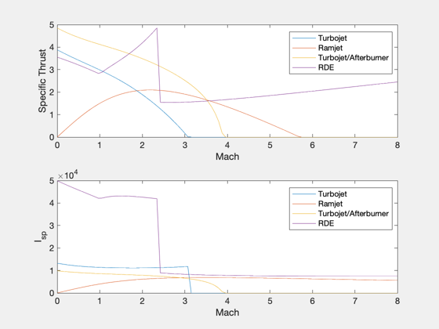

Compare engines
Compare the Isp and thrust of four types of engines with H2 fuel as a function of Mach number at a fixed altitude. This shows the performance at high Mach number as is relevant for the horizontal TSTO.
See also: StdAtm, Turbojet, RamjetKerrebrock, RDE
%-------------------------------------------------------------------------- % Copyright (c) 2000 Princeton Satellite Systems, Inc. All rights reserved. %-------------------------------------------------------------------------- leg = {'Turbojet' 'Ramjet' 'Turbojet/Afterburner' 'RDE'}; m = linspace(0,8); % Mach number range n = length(m); h = 20000*ones(1,n); % Altitude, m p = StdAtm(h); iSp = zeros(4,n); tS = zeros(4,n); d = Turbojet; d.qR = 121e6; [~,iSp(1,:),tS(1,:)] = Turbojet( m, d, p ); [~,iSp(2,:),tS(2,:)] = RamjetKerrebrock( m, d, p ); d.tT7 = 2000; % add an afterburner temperature (default is 0) [~,iSp(3,:),tS(3,:)] = Turbojet( m, d, p ); d = RDE; [~,iSp(4,:),tS(4,:)] = RDE(m,d,p); Plot2D(m,[tS;iSp], 'Mach Number', {'Specific Thrust (N/kg/s)','I_{sp} (s)'},... 'Engines with H2 Fuel','lin',{'1:4' '5:8'}); legend(leg,'location','best') %-------------------------------------- % $Id: e27d8ec6a0316bfb508135c3f1f025074b0459e6 $